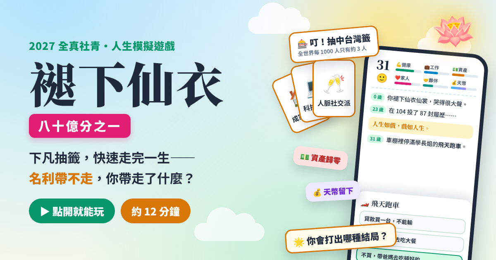
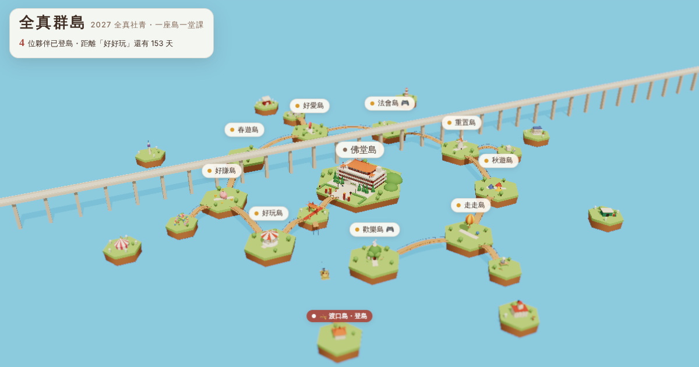

🌿 關於這裡｜About
在忙碌的世界裡，為自己留一片小休息區🌱 這些內容，是為你準備的
專為 26–45 歲的你設計：2027一整年，六場專題課程，搭配聯誼與各種下午活動——但每一場背後，都藏著一個更深的問題：在忙碌的生活裡，你有沒有機會停下來，好好問問自己過得好不好？
🎈 下午，才是驚喜的開始。
生命靈數、V·翻轉後的人生、蔬食料理王、藝術氣球……每個月的下午場都不一樣，用好玩的方式，讓你在笑聲裡認識自己、也認識身邊的人。這不是額外的餘興節目，而是我們特別設計的——讓修行不只是坐著聽，更是動手做、開心玩。
☕️ 你不需要準備什麼，只需要每個月給自己一天。
來這裡，你會遇到一群和你一樣，在生活裡努力著、也願意花時間讓自己更好的人。這一年，我們一起把日子過成修行，把修行過成日子。
🔋 每日流程｜Daily Flow
每一次相聚時的時間節奏與流程安排09:30–10:00🧘♀️ 30min 古典哈達瑜伽
10:00–10:20🥐 20min 休息＆早午餐
10:20–10:30💡 10min 智慧引路・啟心
10:30–12:00💬 90min 觀點分享
12:00–13:00🍱 60min 午餐＆小敘
13:00–14:20🎲 80min 手作/體驗/料理
14:20–14:30✨ 10min 溫暖結語

🎮 互動小遊戲
🪷 先玩一輪：褪下仙衣
人生如戲，戲如人生。
遊戲裡的六個章節，就是今年的六場專題。

🏝️ 3D 互動地圖
一座島一堂課：全真群島
中央是我們的全真道院，九座課程島用木橋串起 2027 一整年。
每多一位夥伴報名，島上就多一個小人偶，我們一起把它點亮。
202703/27
開班／幹部介紹班長
好好玩｜重新找回生活的樂趣
觀點分享：天定 鄭名翔 講師
迎新聯誼 🥳
活動組
202704/24
🧘♀️ 古典哈達瑜伽全真 鄔明清 講師
好好賺｜不一定要有錢，先學會理財
觀點分享：全真 楊峰誌 助理
藝術氣球 🎈
全真 林鈺蓉 講師
202705/29
🎈 戶外聯誼活動
202706/26
🧘♀️ 古典哈達瑜伽全真 鄔明清 講師
好好愛｜喜歡別人之前，先搞懂自己
觀點分享：天曉 李寶莉 講師
生命靈數 🔮
全真 朱宸慧 講師
202708/28
🌱 新道親法會－志工陪伴體驗
202710/02
🧘♀️ 古典哈達瑜伽全真 鄔明清 講師
人生重開機｜人生卡關的時候，你會怎麼辦
觀點分享：全真 何珈貞 講師
V·翻轉後的人生 🎲
天曉 林信宏 講師
202710/30
🚲 戶外聯誼活動
202711/27
🧘♀️ 古典哈達瑜伽全真 鄔明清 講師
出去走走｜世界這麼大，別只活在自己的日常
觀點分享：全真 何思諺 講師
蔬食料理王 🥗
啟化 蘇毓婷 講師


202712/25
🧘♀️ 古典哈達瑜伽全真 鄔明清 講師
活成自己喜歡的樣子｜人生不是交作業
觀點分享：全真 鄔明清 講師
結班聯誼 🥂
班長
🤝 同行夥伴｜Our Team
2027年度陪伴你一起成長的幕後團隊👑 主班點傳師
林明山・張碧雲・蕭仁德
🌿 帶班助理
賴錦坤
⭐ 班長
周逸翔
🌿 坤道副班長
何珈貞
- 協助班長統籌班務，串聯各組運作
- 關懷坤道學員，凝聚坤道班員向心力
- 班長不在時代理主持與臨場協調
- 支援法會與活動中的坤道人力調度
🔹 乾道副班長
羅健洲
- 協助班長統籌班務，串聯各組運作
- 關懷乾道學員，凝聚乾道班員向心力
- 班長不在時代理主持與臨場協調
- 支援法會與活動中的乾道人力調度
🏷️ 人事組
組長：賴美芸
成員：林鈺蓉、楊舒涵
- 報名收件、名冊與出席紀錄
- 每堂簽到、請假統計
- 結班全勤與結業名單
💌 公關禮節組
組長：林詩涵
成員：陳幸梅、陳曉璇、林淑真
- 迎賓接待、引導入座
- 講師邀約聯繫與致謝
- 場內禮儀提醒、對外聯繫
📚 學術組
組長：楊雅雲
成員：王冠博、鄭燕玲
- 年度主題與每堂課綱規劃
- 與講師對接內容、確認大綱
- 觀點分享與課後心得整理
- 網站、課程預告海報視覺美編
🤝 輔導組
成員：陳彥名
- 新學員適應與關懷陪伴
- 缺席或低落學員的聯繫
- 課後追蹤與疑問轉介
📦 總務組
組長：張立人
成員：林淑梅、許麗娟、張馨予、張如靈、張懿文、王志賢、李書承
- 場地佈置與復原、音響桌椅
- 早午餐、午餐採買與備餐
- 收支帳務與物資盤點
🎬 影音組
組長：王冠博
成員：卓子翔、陳熙宗
- 現場拍照、攝影與音響投影
- 活動花絮與年度回顧影片
- 海報、社群與網站素材
🎪 活動組
組長：周能安
成員：許瀚升、張哲瑋、王欣渝、林禹青
- 迎新、戶外、結班聯誼規劃
- 暖場、破冰與遊戲主持
- 法會服務人力統籌
- 下午活動任務支援